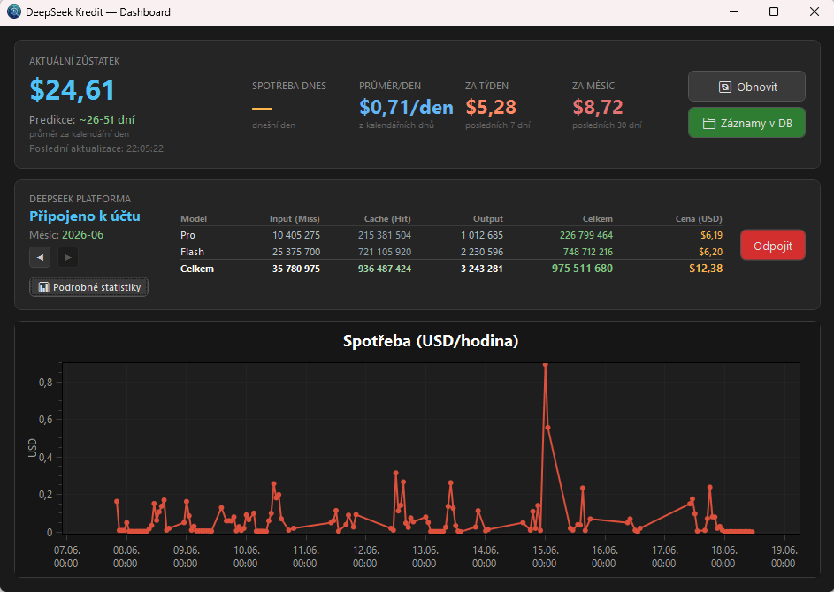
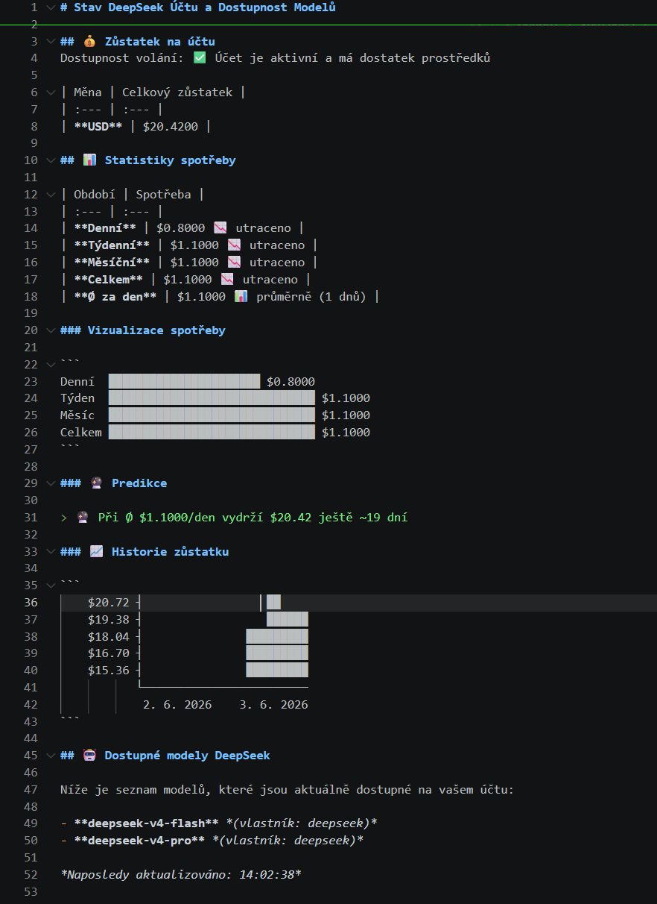

01
Firemní systémy
Systémy pro evidenci, procesy, fakturaci, sklad i reporting. Přesně podle toho, jak vaše firma skutečně pracuje.
WEB · ERP · ISLuRa IT Develop · od roku 2004
Stavíme aplikace pro firmy, které potřebují propojit lidi, procesy, hardware a data — bez zbytečné složitosti.
01 Přístup
Ať řešíte sklad, výrobu, servis v terénu nebo firemní administrativu, cílem je vždy stejný: méně přepisování, méně chyb a lepší přehled nad tím, co se skutečně děje.
02 Služby
Co dodáváme
01
Systémy pro evidenci, procesy, fakturaci, sklad i reporting. Přesně podle toho, jak vaše firma skutečně pracuje.
WEB · ERP · IS02
Rychlé aplikace pro terén a sklad, které počítají s dotykem, výpadky signálu a potřebou fungovat hned.
MAUI · OFFLINE · ANDROID03
Váhy, tiskárny, čtečky, terminály i průmyslová zařízení. Data putují tam, kam mají — bez ručního přepisu.
SCALES · PRINT · SERIAL04
API, synchronizace a bezpečný pohyb dat mezi webem, mobilem, desktopem a službami třetích stran.
API · AZURE · SIGNALR03 Realizace
Vybrané projekty

01 / SYSTEM
Webový informační systém pro firmy, kterým už Excel nestačí — procesy, projekty a dokumentace na jednom místě.
Navštívit projekt ↗
02 / MOBILE + HW
Příjem v terénu, Bluetooth tisk, offline režim a okamžitá synchronizace dat.

03 / HARDWARE
Robustní dotykové pracoviště propojené s váhou, tiskárnou štítků a centrální databází.

04 / ERP
Od nákupu a skladu po fakturaci, statistiky a napojení na partnerské služby. Jeden spolehlivý základ pro růst firmy.

05 / TOOL
Lokální Chrome rozšíření, které exportuje nástěnky a karty do čistého Markdownu.
Zobrazit na GitHubu ↗
06 / WINDOWS + HA
Windows aplikace pro tray monitoring zůstatku DeepSeek API: výstrahy, predikce spotřeby, dashboard a integrace do Home Assistanta.
Zobrazit na GitHubu ↗
07 / VS CODE
Rozšíření do VS Code, které přímo ve stavovém řádku hlídá zůstatek, spotřebu a dostupnost DeepSeek modelů.
Zobrazit na GitHubu ↗08 / PREPARING
Připravovaný .NET nástroj pro definici, validaci, náhled, export a tisk štítků i dokumentů z JSON šablon a JSON dat.
Připravuje se k veřejnému vydání

09 / TOUCH
Velké a přehledné ovládání pro provoz s propojením na databázi i váhu.
04 Spolupráce
Jak postupujeme
Dobrá aplikace nezačíná seznamem technologií. Začíná tím, co dnes lidem brání v práci.
Pojmenujeme cíle, data, zařízení a místa, kde vznikají zdržení nebo chyby.
Rozhraní, procesy a technický základ, který má smysl pro lidi i budoucí rozvoj.
Vyvíjíme po částech, ověřujeme v praxi a zůstáváme partnerem i po nasazení.
První krok je jednoduchý
Stačí pár vět. Ozveme se a společně zjistíme, zda pro váš problém dává smysl postavit řešení na míru.